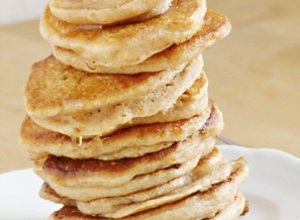

Ekspresowe razowe racuszki bananowe
| Lp. | Produkt | Ilość |
|---|---|---|
| 1 | Mąka orkiszowa razowa | 100 g |
| 2 | Maślanka | 150 ml |
| 3 | Banany | 1 sztuka |
| 4 | Proszek do pieczenia | 1/2 łyżeczki |
| 5 | Cynamon | 1/2 łyżeczki |
Sposób przygotowania
- Mąkę mieszamy z cynamonem i proszkiem do pieczenia.
- Banana rozgniatamy widelcem.
- Banana rozgniatamy widelcem.
- Mąkę łączymy z maślanką, mieszamy dokładnie łyżką, dodajemy banana, mieszamy ponownie.
- Smażymy na dość rozgrzanej suchej lub z małą ilością oleju 1 łyżka ciasta na 1 racuszek.